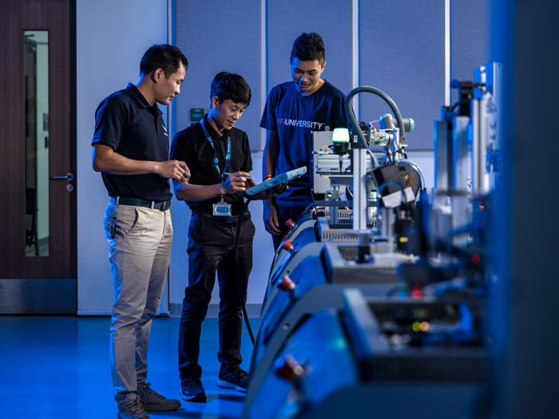

College of Engineering and Computer Science · VinUniversity, HanoiViện Kỹ thuật và Khoa học Máy tính · Trường Đại học VinUni, Hà Nội
Interactive Robot
Design Lab
We design mechanisms that let robots share space with people safely: compliant, reconfigurable, and balanced by their own structure.Chúng tôi thiết kế những cơ cấu giúp robot làm việc an toàn bên cạnh con người: đàn hồi, tái cấu hình được, và tự cân bằng nhờ chính kết cấu của mình.
Explore the researchXem các nghiên cứu Join the labTham gia lab
A robot is safest when its own structure does the work.
Robot an toàn nhất khi chính kết cấu của nó gánh phần việc.
Interactive Robot Design (IRoD) Group is led by Dr. Nguyen Vu Linh at the College of Engineering and Computer Science, VinUniversity.Nhóm Interactive Robot Design (IRoD) do TS. Nguyễn Vũ Linh dẫn dắt, thuộc Viện Kỹ thuật và Khoa học Máy tính, Trường Đại học VinUni.
We study advanced mechanism design: how reconfigurable and compliant systems can make physical interaction safer. Springs, gears and linkages that cancel gravity or hold a constant force mean smaller motors, less energy, and machines that are gentler around people.Chúng tôi nghiên cứu thiết kế cơ cấu tiên tiến: làm sao để các hệ tái cấu hình và hệ đàn hồi giúp tương tác vật lý an toàn hơn. Lò xo, bánh răng và cơ cấu thanh triệt tiêu trọng lực hoặc giữ lực không đổi đồng nghĩa với động cơ nhỏ hơn, ít năng lượng hơn, và máy móc nhẹ nhàng hơn khi ở gần con người.
Applied toỨng dụng vào
- Industrial grippersBộ kẹp công nghiệp
- Surgical robotsRobot phẫu thuật
- Energy-harvesting systemsHệ thống thu hoạch năng lượng
Let go.
It stays.Buông tay.
Vẫn đứng yên.
- Every robot arm fights gravity. Usually a motor pays for it, every second the arm holds still.Mọi cánh tay robot đều phải chống lại trọng lực. Thông thường, động cơ phải gánh việc đó trong từng giây cánh tay đứng yên.
- Put one spring in the right place and gravity is cancelled at every angle. The arm holds wherever it stops.Đặt một lò xo vào đúng chỗ, trọng lực bị triệt tiêu ở mọi góc. Cánh tay dừng ở đâu thì đứng yên ở đó.
- Your turn. Drag the arm, or focus it and use the arrow keys, then let go.Đến lượt bạn. Kéo cánh tay, hoặc chọn nó rồi dùng phím mũi tên, sau đó buông tay.
The textbook spring balancer: an ideal zero-free-length spring with k·a·b = m·g·l. The lab's four-bar and gear-spring compensators are its own designs that pursue the same balance with practical springs.Bộ cân bằng lò xo kinh điển: một lò xo lý tưởng có chiều dài tự do bằng không, với k·a·b = m·g·l. Các bộ cân bằng trọng lực bốn khâu và bánh răng - lò xo của lab là thiết kế riêng, hướng tới cùng sự cân bằng đó bằng lò xo thực tế.
The work so far.Những gì đã làm.
Selected research, newest first. Each row opens the full project page.Các nghiên cứu tiêu biểu, mới nhất trước. Mỗi dòng mở trang chi tiết của dự án.
-
2023
A novel large-stroke constant force mechanismCơ cấu lực không đổi hành trình lớn kiểu mới

-
2022
A design approach for gravity compensators using planar four-bar mechanisms and a linear springPhương pháp thiết kế bộ cân bằng trọng lực dùng cơ cấu bốn khâu phẳng và một lò xo tuyến tính

-
2022
An autonomous mobile robotic manipulator with performance augmentation for large-scale industrial manufacturingTay máy robot di động tự hành tăng cường hiệu năng cho sản xuất công nghiệp quy mô lớn

-
2022
Compliance error compensation of a robot end-effector with joint stiffness uncertainties for millingBù sai số do độ mềm của khâu tác động cuối robot có độ cứng khớp bất định cho gia công phay

-
2021
An intelligent automatic guided vehicle (AGV)Xe tự hành thông minh (AGV)

-
2020
Gravity compensation design of Delta parallel robotsThiết kế cân bằng trọng lực cho robot song song Delta

-
2019
A gravity-balanced reconfigurable mechanism for lower-limb rehabilitationCơ cấu tái cấu hình cân bằng trọng lực cho phục hồi chức năng chi dưới

-
2019
Gravity compensation for serial robotic manipulatorsCân bằng trọng lực cho tay máy robot nối tiếp

-
2017
A spherical decoupled robotic manipulator for neuroendoscopyTay máy robot cầu tách rời dùng cho nội soi thần kinh


Led by Dr. Nguyen Vu LinhDo TS. Nguyễn Vũ Linh dẫn dắt
Assistant Professor and Associate Program Director of Mechanical Engineering at VinUniversity since 2023. Before that, Assistant Professor of Mechanical Engineering at National Chin-Yi University of Technology, Taiwan. PhD in Mechanical Engineering, National Taiwan University of Science and Technology, 2020. General Chair of the 9th IFToMM International Symposium on Robotics and Mechatronics (ISRM 2026).Giảng viên (Assistant Professor) kiêm Phó Giám đốc Chương trình Kỹ thuật Cơ khí tại Trường Đại học VinUni từ năm 2023. Trước đó là Giảng viên (Assistant Professor) ngành Kỹ thuật Cơ khí tại National Chin-Yi University of Technology, Đài Loan. Tiến sĩ Kỹ thuật Cơ khí, National Taiwan University of Science and Technology, năm 2020. Chủ tịch (General Chair) Hội nghị quốc tế IFToMM lần thứ 9 về Robot và Cơ điện tử (ISRM 2026).
- journal articlesbài báo tạp chí
- 35
- awards and honoursgiải thưởng và vinh danh
- 15
- Reviewer of the Year 2025, ASME Journal of Mechanical DesignReviewer of the Year 2025, tạp chí ASME Journal of Mechanical Design
- Faculty of the Year 2025, VinUniversityGiải thưởng Faculty of the Year 2025, Trường Đại học VinUni
- 2023 Best Paper Honorable Mention, ASME Journal of Mechanisms and Robotics (awarded 2024)Giải khuyến khích Bài báo xuất sắc nhất (Best Paper Honorable Mention) năm 2023, ASME Journal of Mechanisms and Robotics (trao năm 2024)
Want to build mechanisms like these? Read the Openings, then write to linh.nv2@vinuni.edu.vn.Muốn cùng chế tạo những cơ cấu như thế này? Hãy xem mục Tuyển dụng, rồi viết thư tới linh.nv2@vinuni.edu.vn.